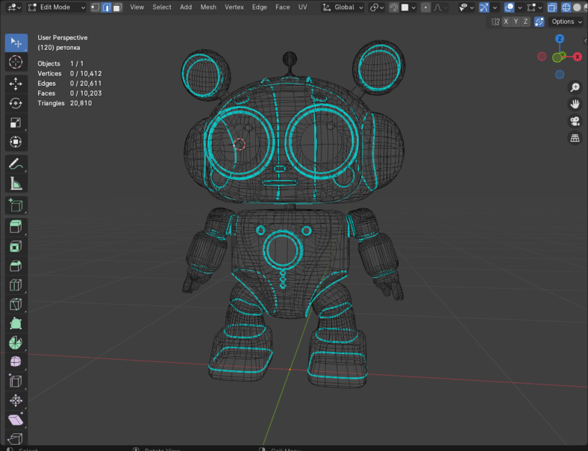

Идея создания виртуального гида возникла с целью сделать музейные экспозиции более привлекательными и понятными для детской аудитории.
«Робот-экскурсовод» представляет собой мобильное приложение с 3D-моделью дружелюбного робота, который знакомится с юными посетителями и в интерактивной форме рассказывает им об экспонатах. Пользователи могут в произвольном порядке изучать заинтересовавшие их объекты, сканируя QR-коды и получая информацию в текстовом, аудио и видео форматах.
